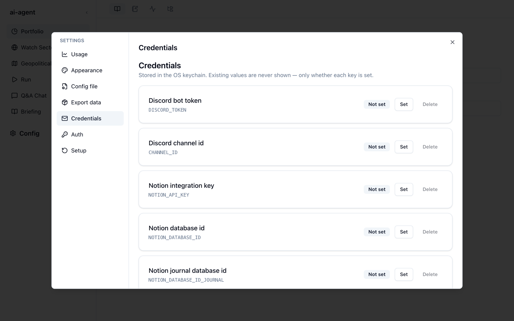

Config（設定画面）
サイドバーの一番下にある Config を押すと、設定画面が開きます。左に 7 つのタブが並び、右上の × で閉じます。どのサービスを開いていても同じ設定画面です。
| タブ | できること |
|---|---|
| Usage | brief-lens の実行ごとの利用量とコスト |
| Appearance | 画面のテーマと背景 |
| Config file | 設定ファイル briefing.json の書き出し・読み込み |
| Export data | 生成物と添付ファイルを zip でダウンロード |
| Credentials | Discord・Notion・Anthropic の認証情報の登録 |
| Auth | Claude の呼び出し方（CLI / API キー）の切り替え |
| Setup | セットアップウィザードのやり直し |
Usage
brief-lens が Claude を呼び出した分の利用量を、実行ごと・日別に表示します。Claude Code 全体の利用量を見る Monitor との違いも含めて、Monitor と Usage で説明しています。
Appearance
Theme で Light と Dark を、背景で Default と Soft を選べます。設定はブラウザに保存されます。
Config file
設定ファイル briefing.json を丸ごと扱います。画面から編集できない項目（為替のバンド、使用するモデルなど）を変えたいときに使います。
- Export — 今の
briefing.jsonをダウンロードします。 - Import — 編集した JSON ファイルを選んで読み込みます。JSON として読めないファイルや、設定の形式に合わないファイルは、エラーを表示して読み込みません（今の設定は変わりません）。
項目の意味は設定ファイルを参照してください。
Export data
Download archive zip を押すと、データの保存場所の output/（ブリーフィング、ジャーナルなど）と input/（チャットで添付した画像など）をまとめた zip をダウンロードします。バックアップや、別のマシンへの移行に使います。
Credentials

各項目の Set で値を入力して保存し、Delete で削除します。値は OS のキーチェーンに保存され、画面には Set（設定済み）か Not set（未設定）だけが表示されます。
| キー | 用途 | 必要になるとき |
|---|---|---|
DISCORD_TOKEN | Discord Bot のトークン | ブリーフィングを Discord に配信する |
CHANNEL_ID | 配信先の Discord チャンネル ID | 同上 |
NOTION_API_KEY | Notion インテグレーションのキー | Notion への配信、チャットの追記、ジャーナルの同期 |
NOTION_DATABASE_ID | ブリーフィング用の Notion データベース | ブリーフィングの配信、チャットの追記 |
NOTION_DATABASE_ID_JOURNAL | ジャーナル用の Notion データベース | ジャーナルの同期 |
ANTHROPIC_API_KEY | Anthropic の API キー | Auth を API モードにする |
キーチェーンに値がないときは、データの保存場所の .env にある同名の変数が使われます。
Auth
Claude の呼び出し方を切り替えます。
| モード | 動き | 料金 |
|---|---|---|
| Claude Pro / Max subscription (CLI) | claude login のセッションを使う。API キーは子プロセスに渡さない | プランの定額の範囲内 |
| Anthropic API key | キーチェーン（なければ .env）の ANTHROPIC_API_KEY を Claude Code CLI に渡す | API の従量課金 |
API モードに切り替える前に、Credentials で ANTHROPIC_API_KEY を登録しておく必要があります。切り替えは次の実行から反映され、アプリの再起動は要りません。
Setup
Re-run setup wizard を押すと、セットアップウィザードをもう一度開きます。今の設定を初期値として始まり、ウォッチセクターや地政学リスクの定義はそのまま残ります。途中で画面を閉じても、アプリが使えなくなることはありません。